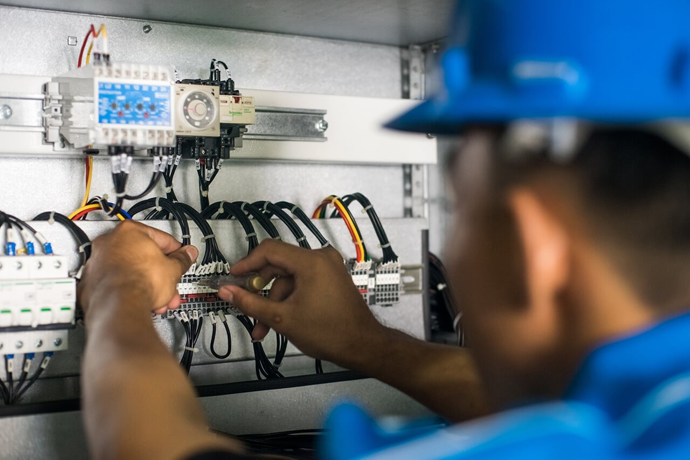
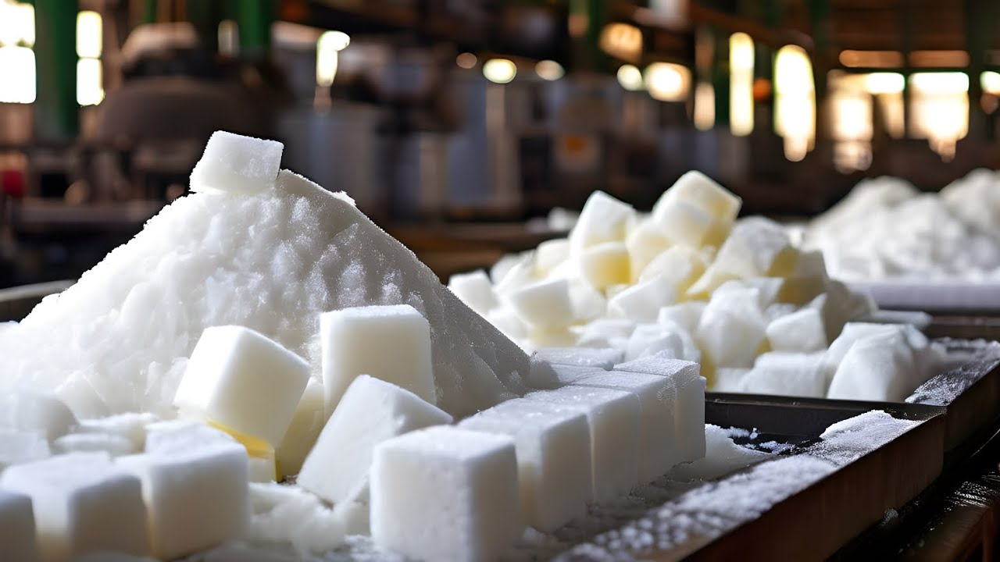
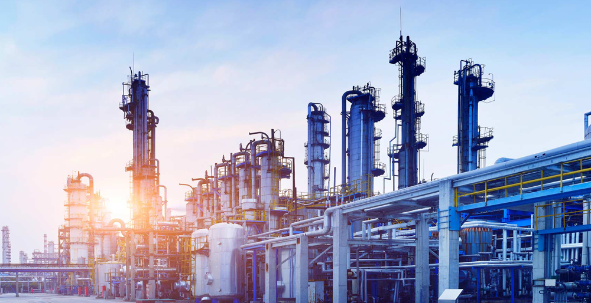
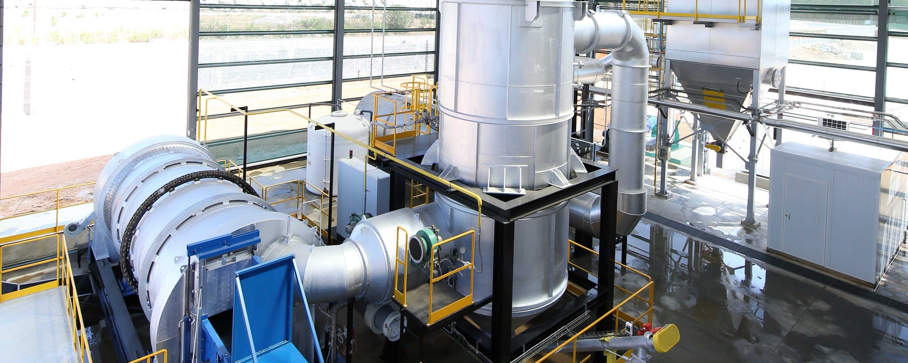
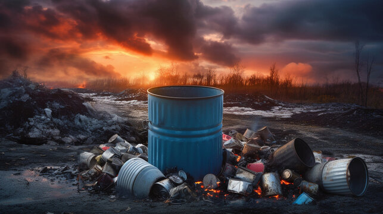
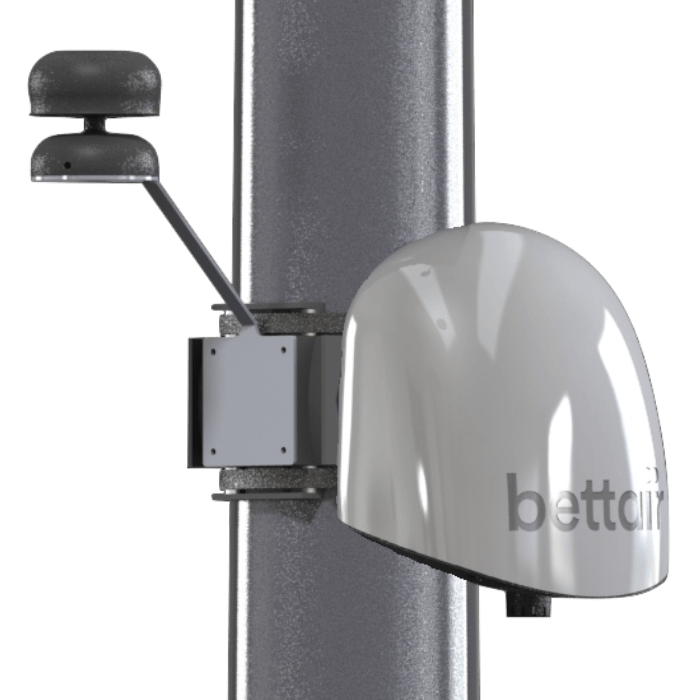
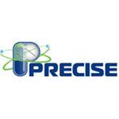
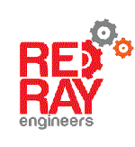
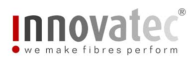

Installation Guides
Agua Instruments Private Limited is a leading environmental solutions provider, now expanding its expertise to the UAE market. Headquartered in India, we extend our services across UAE in Abu Dhabi, Sharjah, Ajman, and other Emirates, delivering cutting-edge environmental monitoring and process automation solutions. As system integrators and solution providers in Process Analytics, Process Instrumentation, Environmental Monitoring, and Emission Control, we specialize in delivering customized solutions tailored to the UAE's regulatory and industrial needs.
Advanced analyzers for rivers, lakes, and industrial effluents across UAE
UAE-compliant CEMS for power plants and cement industries
Real-time PM2.5, PM10, NOx & SO2 monitoring
SCADA, PLC & IoT solutions for smart industrial growth












.jpg)




Agua Instruments installed a monitoring system at our facility in 2020. Their prompt services and reliable products have exceeded our expectations.
The monitoring system we purchased from Agua Instruments has been a valuable addition to our operations. Their customer service is quick and efficient.

We installed a monitoring system from Agua Instruments in our client's facility. The support and service provided by Agua Instruments have been excellent.
We procured and supplied a monitoring system model in 2021 for a customer in Kerala. The Analyser was installed and has been maintained by Agua Instruments. Their services and response are really commendable.
We would like to testify that we had procured TWO units of monitoring system Analysers in 2021 for our Mahad MMA-CETP – Inlet and Outlet. Both the systems have been working well to our satisfaction and we are getting a prompt and satisfactory service from Agua Instruments.

We, Innovatech Systems, had purchased a monitoring system for our customer M/s Eternis Fine Chemicals, Mumbai for their ETP. We would like to appreciate the Service support extended by M/s Agua Instruments, which is highly commendable, keep up the good work.
At Paramount Syncot, Tarapur MIDC, we purchased complete Automation system for Online Water Quality Monitoring from Agua Instruments and they have given us a very good support. Their product and service quality is excellent.

Being the owner of Orion Chemicals, I would like to appraise M/s Agua Instruments for the kind of support they have extended to us for the Online Monitoring System with Automation, which we purchased on 2020. They always give priority to giving the best support to their customers.